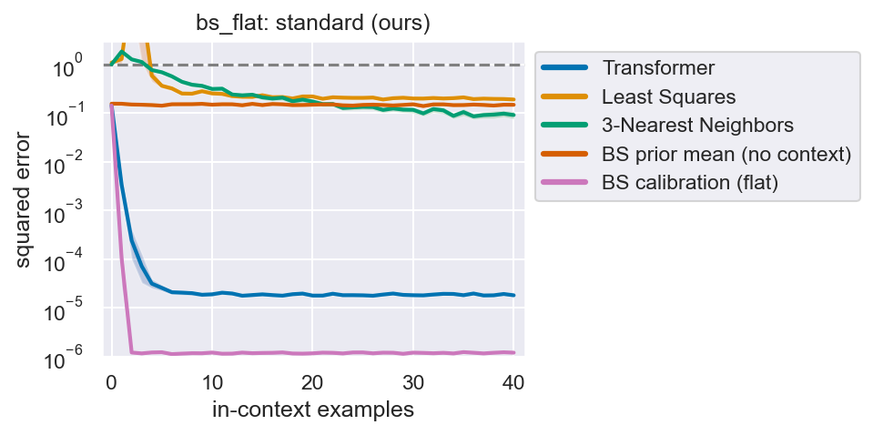
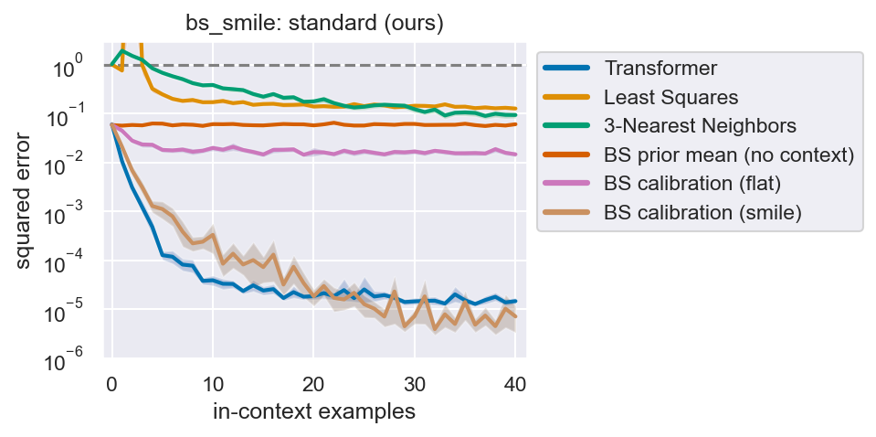

Lesson 3 · about 15 minutes
Reading our results
Which line on the plot is the evidence, and why our Transformer "beats the optimum" with few examples, which turns out to be exactly what a well-trained model should do.
Your win for today: look at any of our Black–Scholes plots and say (1) whether it shows in-context learning, (2) how close it gets to the best possible, and (3) why beating calibration at k ≤ 3 is expected, not suspicious.
1. Anatomy of a plot

figures/bs_flat/standard_repr.png, from our trained model's metrics.json.- x-axis: k, the number of examples before the query.
- y-axis: squared error on the standardised price, log scale, averaged over 1,280 prompts. Each gridline is 10×.
- Shaded bands: 90% bootstrap intervals over those prompts (
src/eval.py:153). They show evaluation noise, not seed-to-seed variation; we trained one seed.
2. The ladder of reference lines
Read every BS plot by asking which rung the Transformer has passed:
| Line | What it knows | Getting below it proves |
|---|---|---|
| Trivial (dashed, 1) | the average price | nothing |
| Least squares, 3-NN | generic, from the paper; doesn't know the formula | nothing; they're weak here |
| BS prior mean | the formula, but ignores the examples | in-context learning (lesson 1) |
| BS calibration | the formula and the true vol model; fits the examples | nothing by crossing it. It's a yardstick: near-optimal with many examples, but beaten by the ideal predictor with few (§3) |
Least squares spikes to 41 at k = 2 because it fits a linear function of x. With 2 features and 2 examples it solves exactly and extrapolates wildly. Use it to show generic learners fail, never as evidence.
Reading bs_flat: the Transformer drops below the prior mean after one example (0.15 → 0.0034), so in-context learning is clear. It then plateaus at 2×10⁻⁵ while calibration reaches 1.2×10⁻⁶. That 15× gap is the Transformer's precision floor: an RMS error of about 0.05% of S. It's near-optimal, not exact.
3. The puzzle: beating "optimal" on bs_smile

figures/bs_smile/standard_repr.png. Blue (Transformer) runs below light brown (smile calibration) up to about k = 20.| k | 1 | 2 | 3 | 5 | 10 | 40 |
|---|---|---|---|---|---|---|
| Transformer | 0.0107 | 0.0031 | 0.0012 | 0.00013 | 0.00004 | 0.000015 |
| Smile calibration | 0.0211 | 0.0069 | 0.0031 | 0.00112 | 0.00033 | 0.000007 |
Calibration knows the true model. How can a network beat it? Two facts settle it.
Fact 1: training on squared error targets the posterior mean
For one prompt, let D be the examples and Y the true query price. For any prediction g:
E[(Y − g)² | D] = Var(Y | D) + (E[Y | D] − g)²
The first term doesn't depend on g, so the best g is E[Y | D]: the query price averaged over every vol smile consistent with the examples, weighted by the prior. We train with squared error on prompts drawn from exactly that prior, so a perfectly trained Transformer is this posterior mean, the Bayes-optimal predictor.
Fact 2: calibration returns one fit, not the average
With one example and three unknowns, infinitely many smiles price the example exactly. Least squares can't tell them apart: it returns whichever one its search lands on. If that fit is effectively a random draw from the consistent smiles, its expected error is twice the posterior variance, because both it and the truth vary independently. The average's error is just the posterior variance. Explore it:
The resolution. At k = 1 our simulation (4,000 stocks, from assets/posterior.js) gives 0.0099 for averaging and 0.0196 for one exact fit: a ratio of 1.98. Our trained models score 0.0107 (Transformer) and 0.0211 (calibration). The Transformer isn't beating the optimum. It sits on it, and calibration was never the optimum with fewer examples than parameters.
With more examples the consistent smiles shrink to one, so picking ≈ averaging and both lines should meet near zero. Ours stay apart until about k = 20 for a second, separate reason: our grid-search calibration converges slowly (gap 2 in the project map).
4. What this changes in the paper
- Call calibration "the model-based reference". It's optimal only with enough noise-free examples. The same goes for the
noisyeval: least squares is the maximum-likelihood estimate, not the Bayes-optimal one. - Add the posterior-mean baseline (gap 3). It's cheap: weight prior samples by how well they fit the examples. The widget above is the k = 1 version.
- Under distribution shift, apply the same ladder per eval. On
scale-m=3, bs_flat scores 0.082 against that eval's prior mean of 0.073: it doesn't reach the in-context rung at all.
5. Practice
Name the reference lines from weakest to strongest, and what getting below each one proves.
Trivial (nothing) → least squares / 3-NN (nothing, they're generic) → BS prior mean (in-context learning) → calibration (matches the model-based fit; beating it at small k is expected because the target is the posterior mean).
Why does minimising squared error lead to the posterior mean? Write the one-line decomposition.
E[(Y − g)² | D] = Var(Y | D) + (E[Y | D] − g)², which is minimised at g = E[Y | D].
1. Which reference line separates in-context learning from memorisation?
The prior mean already knows everything that's fixed across prompts. Only getting below it requires using the examples.
2. Least squares jumps to error 41 on bs_flat at k = 2. Why ignore it as evidence?
It's linear in x and knows nothing about Black–Scholes. With 2 features and 2 examples it solves exactly and extrapolates wildly. The standard eval is noise-free.
3. A model trained to minimise squared error over the training prior ideally predicts…
The squared-error minimiser is the conditional mean E[Y | D]: the query price averaged over all parameters consistent with the examples, weighted by the prior.
4. With one example on bs_smile, why is calibration's error about double the Transformer's?
A single exact fit has expected error 2× the posterior variance; the average has 1×. The simulation gives 1.98×, and our models give 0.0211 / 0.0107 ≈ 2.0. The grid's precision matters at larger k, not here.
5. On scale-m=3, bs_flat scores 0.082 and that eval's prior mean is 0.073. What do you conclude?
Compare within the eval: the Transformer is worse than ignoring the examples. Calibration is fine there (6e-7 at k = 40), and the prior mean is valid for any eval because it uses the same vol prior.
Panwar, Ahuja & Goyal (2023), "In-Context Learning through the Bayesian Prism", abstract and introduction. It frames in-context learners as approximating the Bayesian predictor, the exact lens for our k ≤ 3 result, and it covers mixtures of function families, which is relevant for extension A.
Anything unclear? Ask me in the terminal. I can run the posterior simulation at k = 2, or sketch the posterior-mean baseline as code for src/models.py.